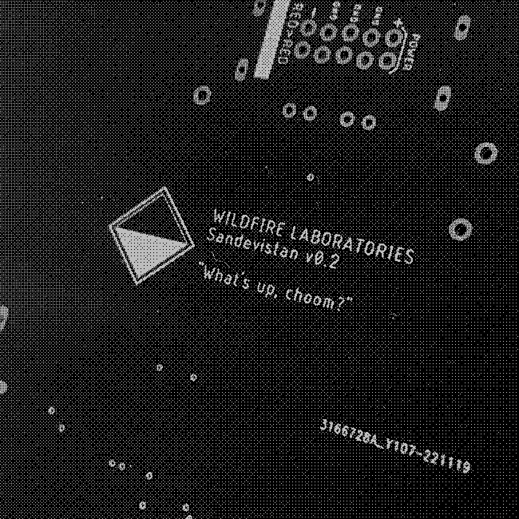

WL-33 - "SANDEVISTAN"
MATERIALS GUIDE

SUPPORT
If any issues arise please click here to contact us via email first. We'll walk you through any problems you may be having (with the module).
B.O.M.
for v1.0 boards
| Part | Value | Qty. | Link | Notes | |
|---|---|---|---|---|---|
| C1, C2 | 10uF | 2 | here | ||
| C5 | 100nF | 1 | here | ||
| D1, D2 | 1N4004 | 2 | here | ||
| D3, D4, D8, D9 | 1N4148 | 4 | here | ||
| D5, D6, D10, D12 | LEDs | 4 | red LEDs here | any 5mm LEDs work, experiment! | |
| IC1 | TL074 | 1 | here | ||
| L/R DIRT | 20kB | 2 | here | kurled shaft 9mm | |
| L/R GAIN | 50kB | 2 | here | ||
| R2 / R6 / R10 / R14 | 1k | 4 | here | all resistors 0805, 1/8w SMD | |
| R4 / R5 / R12 / R13 | 2k | 4 | here | ||
| R8 / R15 | 10k | 2 | here | ||
| R3 / R11 | 56k | 2 | here | ||
| R1 / R9 | 100k | 2 | here | ||
| ALL JACKS | 4 | here | aka "Thonkiconn" | ||
| Euro Power pins | 2 x 5 | here | 2 rows of 5 | ||
| Piezos | 2 | here | leave the lead wire on! |
BUILD NOTES
-
Affix the two piezo elements to the circles on the back of the panel. Hot glue or superglue works well here.
-
You can affix pretty much anything (or nothing) you'd like to the front panel, but if you'd like the classic sandpaper, cut it to a width of about 92mm and height of 63mm. Pieces of belt sander sandpaper work well here and are very durable.
-
Before powering on for the first time, check for shorts between the GND, +12, and -12 test points.
-
Values for all parts will be on the board.
-
The 3.5mm jacks are marked with their function (IN, OUT, etc) for easier troubleshooting.
{kind=link}
{kind=link}